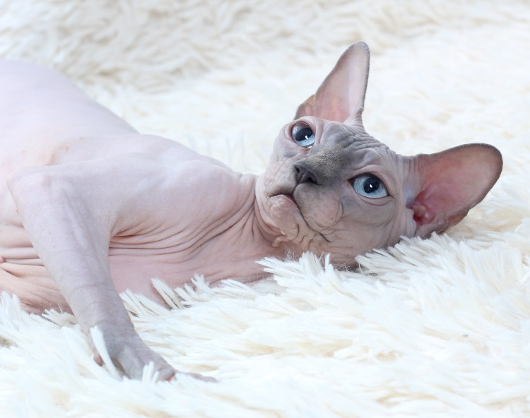

html
Уход за сфинксом
Кошки сфинксы достаточно просты в содержании и уходе. Правда есть несколько особенностей, которые при содержании любого сфинкса необходимо учитывать, будь то голый канадский сфинкс или велюровый донской сфинкс:
- Уход за кожей сфинкса – Отличительной чертой сфинксов являются выделения кожной смазки (воскоподобного красно-коричневого вещества) выделяют его не потовые, как многие ошибочно думают, а сальные железы кожи. Эти железы образуют защитную смазку для кожи. Чересчур обильные выделения секрета может говорить о том, что сфинкс неправильно питается (например слишком жирная пища) или не очень хорошо себя чувствует. Необходимо выяснить причину и устранить её. Этот секрет абсолютно не мешает сфинксу, и чистка кошки необходима в косметических целях. Как правило, у сфинксов, сохранившего остаточную оброслость, чрезмерные кожные выделения отсутствуют. Чтобы кожа сфинкса всегда находилась в хорошем состоянии, её необходимо протирать влажной губкой или специальными салфетками, не содержащими спирт. Очень хорошо эта смазка удаляется махровым полотенцем, смоченным в горячей воде. Мыть сфинксов рекомендуется нейтральными моющими средствами, предназначенными для животных с чувствительной кожей, или детскими шампунями с Ph=5,5 не раздражающие глаза. После купания сфинкса необходимо вытереть насухо, чтобы он не простудился. Сфинксы, как и любые другие кошки, любят греться на солнце. При этом они очень быстро загорают, однако польза от загара сомнительно: нежная кожа сфинкса может обгореть, покрыться волдырями, в некоторых случаях прямые солнечные лучи провоцируют серьёзные кожные заболевания(в том числе опухоли).Опытные владельцы оберегают своих сфинксов от прямых солнечных лучей, отдавая предпочтение воздушным ваннам в рассеянных лучах. Полученный загар у голых кошек очень стойкий, и долго держится.
- Уши сфинкса – чуткие локаторы. Благодаря повышенному обмену веществ, в ушах сфинксов чаще, чем у представителей других пород, образуются темные выделения. Уши сфинксу необходимо чистить по мере их загрязнения сухими ватными тампонами, так же для этих целей можно использовать специальные косметические средства для чистки ушейи (не лечебные препараты).
- Глаза сфинкса -зеркало души. В уголках глаз в умеренных количествах скапливается слизь. Её удаляют сухим или смоченным (чёрным /зелёным чаем) ватным тампоном. Обычно глазные выделения у здорового сфинкса либо прозрачные, либо коричневатые, желеобразные. Если глаза вашего сфинкса воспалены, покрасневшие и имеют гнойные выделения (бело-серые, желто-зеленые) вам необходимо обратиться к ветеринарному врачу.
- Когти сфинкса. Когти необходимо стричь приблизительно раз в 10-14 дней. Срезают только белые кончики; для этого используют специальные кусачки-когтерезы или маникюрные щипчики. Когти у кошек обязательно подрезают перед посещением ветеринара, перед вязкой и перед выставкой. Вообще эта процедура очень актуальна для сфинксов, когда дома держат более одного животного т.к. любая царапина на голой коже сфинкса оставляет после себя след. Кроме того, сфинксам необходимо чистить ногтевое ложе, т.к. в ногтевых складках скапливается сальная смазка.
